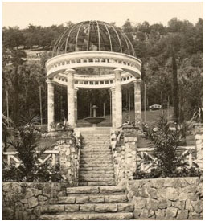
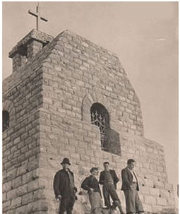
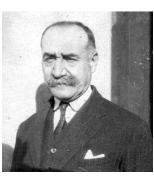
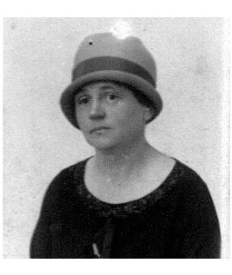

Istorija Rtnja počinje sa porodicom Minh, tačnije 1870. godine kada se Samuilo Minh sa svojom porodicom doseljava iz Moravice u Paraćin. Samuilo iste godine osniva Štofaru i bavi se proizvodnjom tekstilašto mu veoma dobro ide. Njegov najstariji sin ga u to vreme ubeđuje kako je pametno otvarati rudnike po Srbiji, što on i čini otvarajući tri rudnika jedan kod Aleksinca, drugi kod Ćićevca i treći na Rtnju. Rudnik na Rtnju je otvoren 1902. godine.
Porodica Minh je bila veoma vredna i odgovorna, radili su na aktiviranju čitavog ovog kraja praveći žičaru, planinsku železničku prugu kojom su vagoneti prevozili ugalj, parnu električnu centralu, takođe su imali i separaiju uglja. Zatim su raspolagali i raznovrsnim radionicama, kao što je na primer stolarska koja je slžila za proizvodnju nameštaja za radnike rudnika.
Porodica Minh je takođe zaslužna i za otvaranje prve privatne škole za decu radnika. U Minhovom rudniku na Rtnju radili su Slovenci, Hrvati, Mađari, Rusi i mnogi drugi. Ova porodica je zaslužna i z apostojanje ambulante, bolnice, bioskopa, pekare i kafane na Rtnju, kao i za podizanje parka površine 40 ha sa oko 150 vrsta drveca, rastinjai drugog cveca u samom rudničkom naselju. U ovom parku je izgraden i rozarijum. Julius Minh bio je oženjen Gretom,Austrijankom jevrejskog porekla, ženom koja je volela da putuje i uvek bi sa putovanja donosila i po neku novu biljku. Cesto je sedela naklupi ispred Rozarijuma i gledala vagone kakoprevoze ugalj.Duž koloseka gde su prolazili vagoni bi1o je posađeno preko 3000 sadnica ruža, takoda se ugalj i nije video od ruža. Poznate su priče rudničkog vrtlara pokojnog Bogoljuba Vidojevića, koji je sve do zatvaranja rudnika, pa i kasnije iako penzioner, vodio brigu o preostalim biljkama i stazamau parku. 1935. godineova porodica je izgradila i Sokolski dom čija zgrada i danas postoji. Naselje Rtanj nastavilo je da živi na jedan vrlo organizovan nacin i do današnjih dana samo bez rtanjskog rudnika i porodice Minh, čiji potomci danas žive u Meksiku, Engleskoj, Australiji i Izraelu.

Rozarijum u parku naselja Rtanj

Kapelica na vrhu Rtnja

Julius Minh - najstariji Samuilov sin

Greta Minh-supruga Julijusa